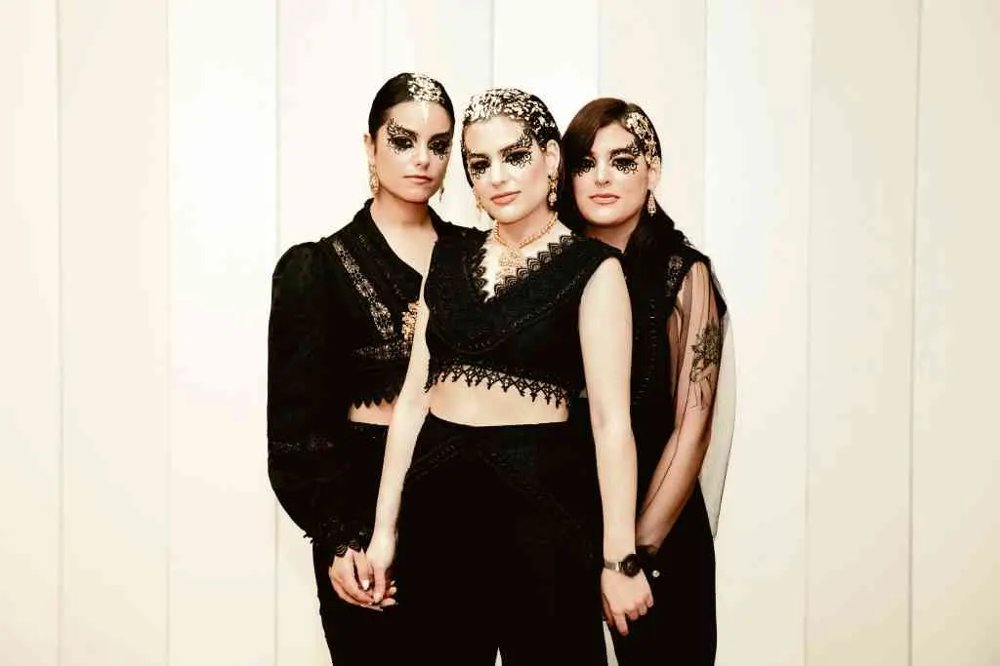
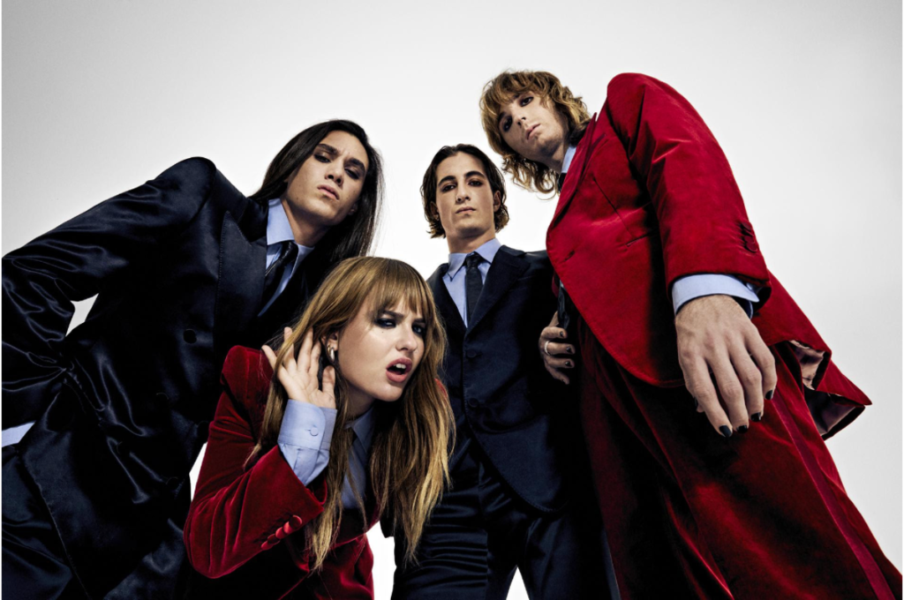

Mis artistas favoritos
Tanxugueiras
Tanxugueiras es un trío musical gallego formado por Aida Tarrío y las hermanas Olaia y Sabela Maneiro. Conocidas por su poderosa combinación de música tradicional gallega y sonidos modernos, han logrado llevar las cantareiras y los ritmos ancestrales a nuevas generaciones. Su estilo fusiona panderetas, voces potentes y bases contemporáneas, creando una propuesta única que reivindica la cultura gallega desde una perspectiva actual y feminista. Alcanzaron gran popularidad en España tras su participación en el Benidorm Fest 2022 con su tema "Terra", convirtiéndose en un símbolo de identidad y orgullo gallego.
Måneskin
Måneskin es una banda de rock italiana formada en Roma en 2016, compuesta por Damiano David (voz), Victoria De Angelis (bajo), Thomas Raggi (guitarra) y Ethan Torchio (batería). Su estilo mezcla rock alternativo, glam rock y sonidos contemporáneos, caracterizándose por su energía arrolladora y su actitud provocadora sobre el escenario. Måneskin alcanzó fama internacional tras ganar el Festival de Eurovisión 2021 con su tema "Zitti e buoni", lo que les abrió las puertas de los grandes escenarios europeos y americanos. Hoy son uno de los referentes del nuevo rock europeo, combinando actitud rebelde con influencias clásicas.
Coldplay

Coldplay es una banda británica de pop-rock alternativo formada en Londres en 1996, integrada por Chris Martin (voz y piano), Jonny Buckland (guitarra), Guy Berryman (bajo) y Will Champion (batería). Conocidos por su estilo melódico, emocional y atmosférico, han cosechado éxitos internacionales como "Yellow", "Viva la Vida", "Fix You" o "A Sky Full of Stars". A lo largo de su trayectoria, han sabido evolucionar desde un sonido indie rock intimista hacia propuestas más experimentales y coloridas, convirtiéndose en una de las bandas más influyentes y queridas del panorama musical mundial. Sus conciertos destacan por sus espectáculos visuales, luces y mensajes de unidad y optimismo.